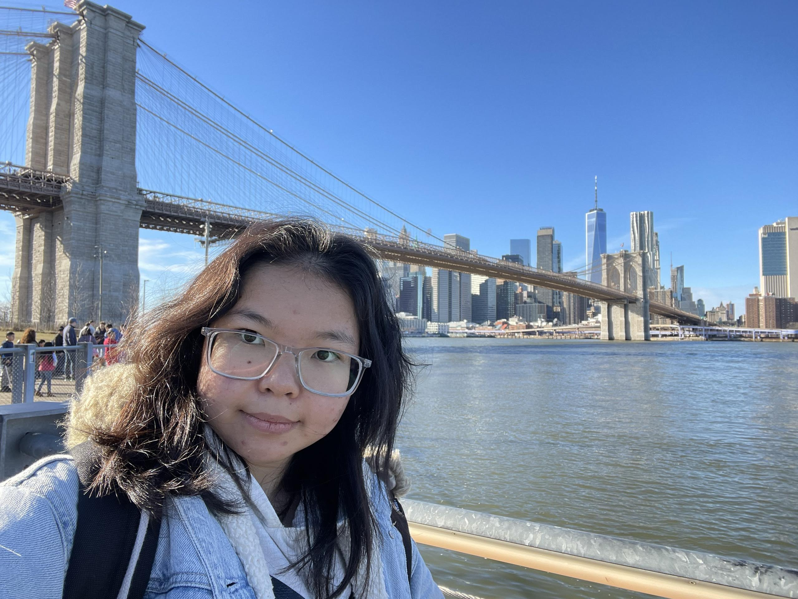
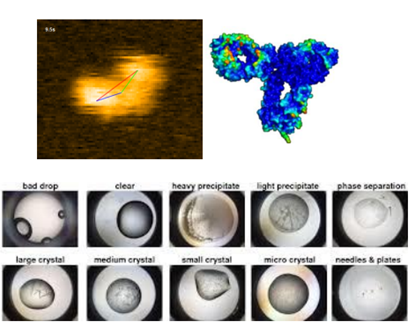
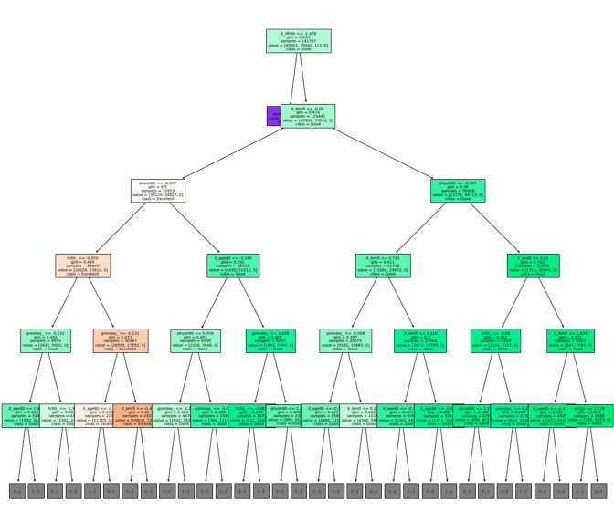

|
Ngoc (Natalie) Pham I'm a graduate from MS-DAS, Carnegie Mellon University (CMU). I am currently working as teaching assistant and research assistant at Machine Learning Department, CMU, where I was advised by Professor Andrej Risteski. I did my undergraduation at Chinese University of Hong Kong, majored in Mathematics. My research interest are theorectical machine learning and its application in scientific domains, specifically in differential equations. |
 |
ProjectsApplications of Machine Learning and Deep Learning to various fields, including health care, medical images and art. |
|

|
Machine Learning Pipelines for Microscopic Images Processing
Natalie Pham, Gautami Kant Slide A project collaborated with Bristol Myer Squibb. By applying machine learning techniques, meaningful pseudo-labels can be assigned to images, such as distinguishing between ill-formed and well-formed protein droplets or identifying different conformations of HS-AFM molecules. This process reduces the need for manual labeling of new data, saving time and effort. |
|

|
Behavioral Risk Factor Surveillance System Analysis
Tianhan Ling, Alice Wu, Natalie Pham Slide This project investigated how behaviour and health conditions might affect General Health Status of people. This aims to identify populations at increased risk of chronic health conditions. XGBoost or Random Forest models, with oversampling to resolve the issue with imbalanced classes, gave the highest prediction accuracy of 80%. |
Miscellanea |


{kind=link}
|
This website's is adapted from Jon Barron's source code. Do not scrape the HTML from this page itself, as it includes analytics tags that you do not want on your own website — use the github code instead. Also, consider using Leonid Keselman's Jekyll fork of this page. |